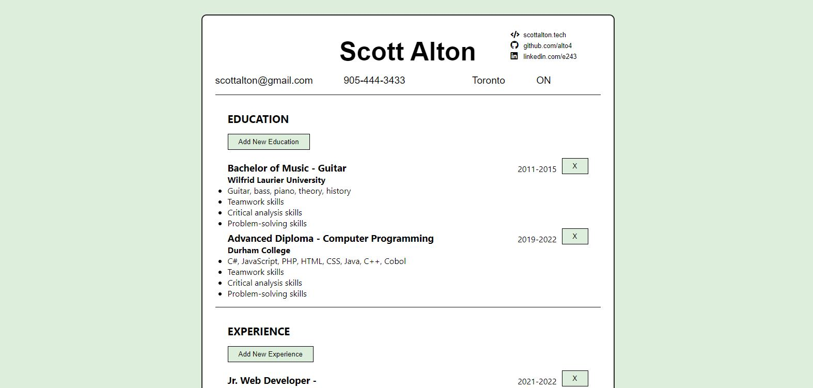

Today I spent most of my efforts building out the resume generator app, including adding the form to input entries for the experience and education sections
Overall this went quite well once I decided to keep the state of both forms independent to that component, generate an object, then pass that up to the resume component. I think this is a good approach and overall I'm pretty happy with the progress made in a couple hours wiring up the form submission logic and getting it to look decently similar to a proper resume in format.
Here is a snapshot of the resume generator project after the second day:
